Appearance
Admin → Appearance sets how OOOhm looks for everyone in the company. People can't change it for themselves; they only choose light or dark on their account page, where the theme has a dark version.
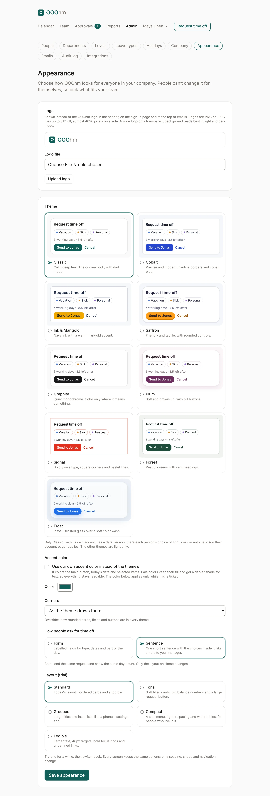
Logo
Your logo shows instead of the OOOhm logo in the header, on the sign-in page and at the top of emails. Logos are PNG or JPEG files up to 512 KB, at most 4096 pixels on a side. A wide logo on a transparent background reads best in light and dark mode. Remove logo brings the OOOhm logo back; emails already sent show your company's name instead.
Theme
Nine themes, each a full look: colours, type, corners and buttons. Each option shows a small live preview.
| Theme | Look |
|---|---|
| Classic (default) | Calm deep teal. The original look, with dark mode. |
| Cobalt | Precise and modern: hairline borders and cobalt blue. |
| Ink & Marigold | Navy ink with a warm marigold accent. |
| Saffron | Friendly and tactile, with rounded controls. |
| Graphite | Quiet monochrome. Colour only where it means something. |
| Plum | Soft and grown-up, with pill buttons. |
| Signal | Bold Swiss type, square corners and pastel lines. |
| Forest | Restful greens with serif headings. |
| Frost | Playful frosted glass over a soft colour wash. |
Only Classic, with its own accent, has a dark version. The other themes are light only.

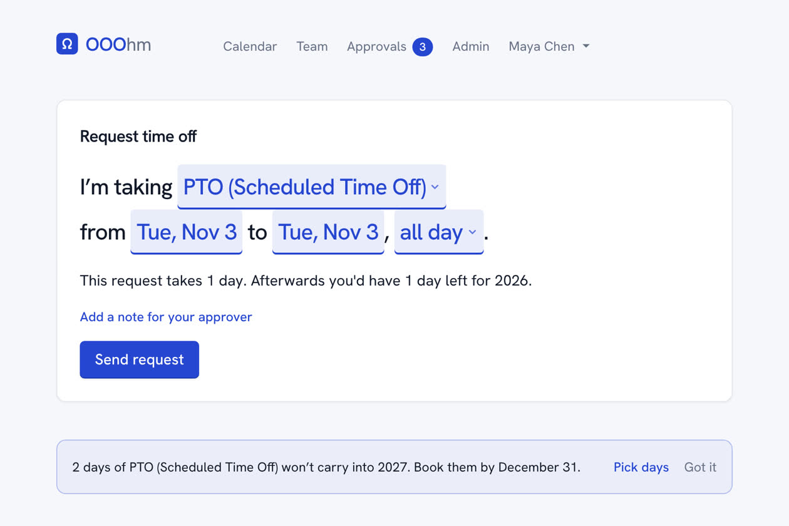
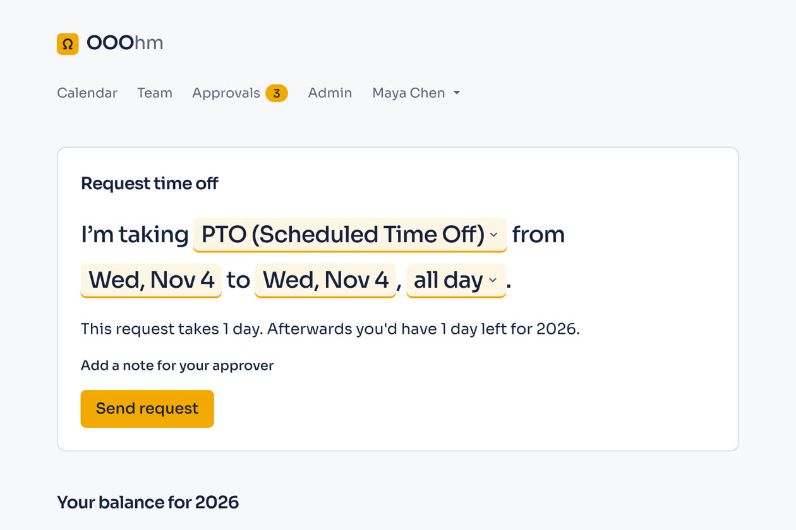
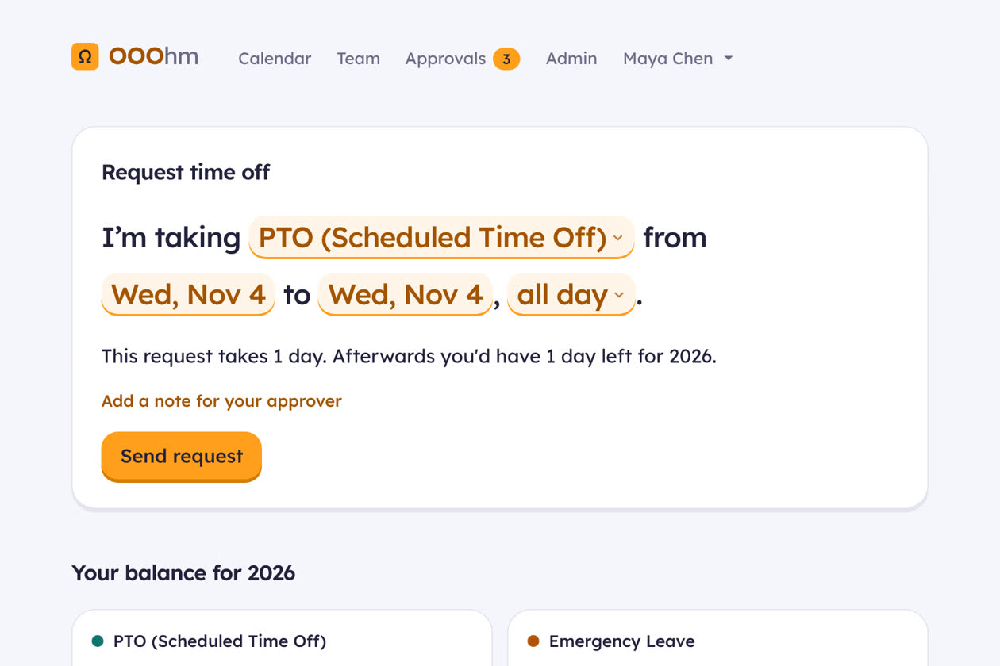
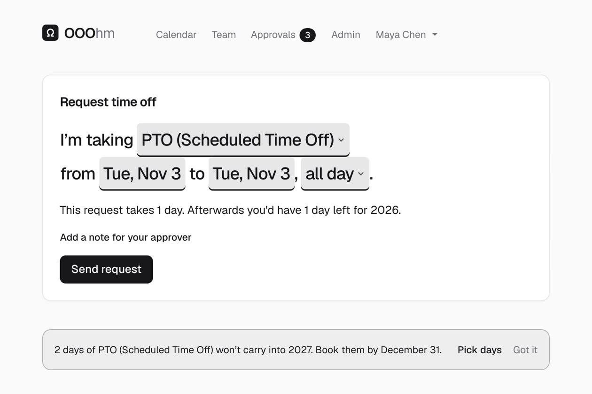
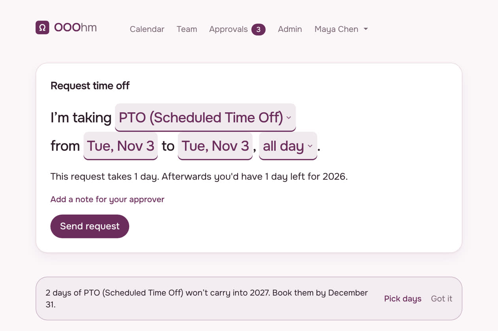
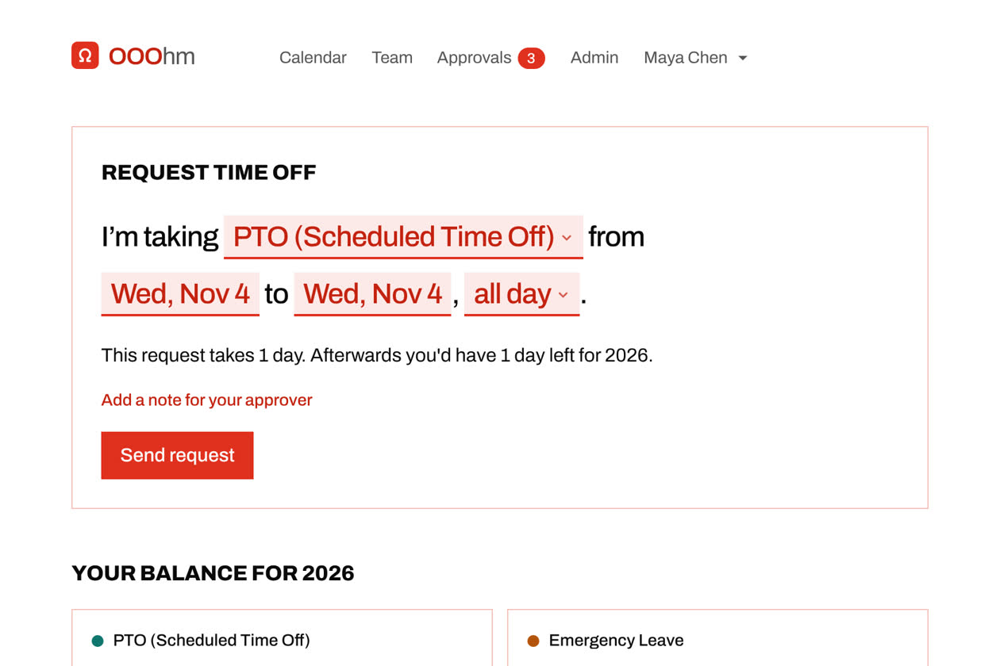
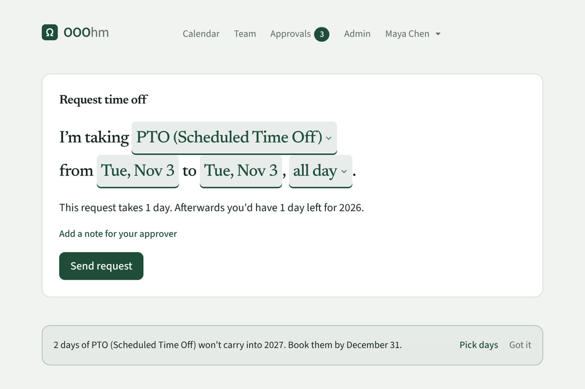
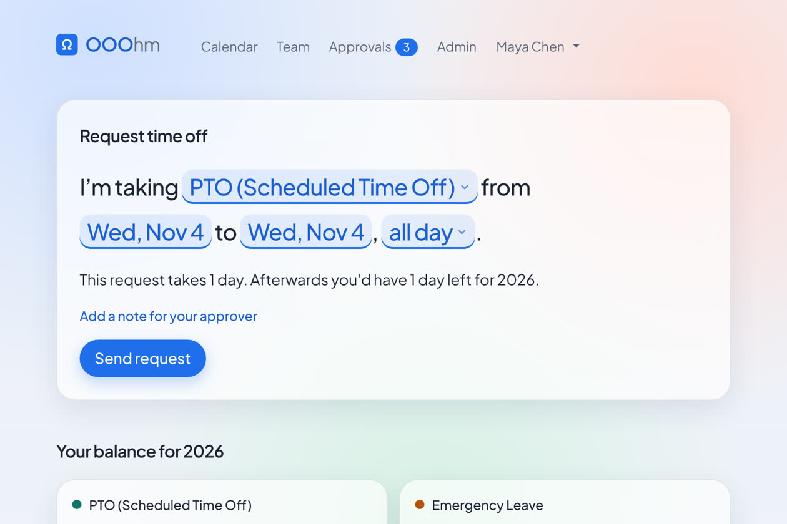
Accent color
Tick Use our own accent color instead of the theme's and pick a colour. It colours the main button, today's date and selected items, and the buttons and links in emails. Pale colours keep their fill and get a darker shade for text, so everything stays readable. The colour applies only while the box is ticked.
Corners
Corners overrides how rounded cards, fields and buttons are in every theme: As the theme draws them (default), Square, Slightly rounded, or Rounded.
How people ask for time off
| Choice | On Home |
|---|---|
| Form | Labelled fields for type, dates and part of the day. |
| Sentence | One short sentence with the choices inside it, like a note to your manager. |
Both send the same request and show the same day count. Only the layout on Home changes. See Asking for time off.
Layout (trial)
Five layouts change spacing, shape and navigation; every screen keeps the same actions. Try one for a while, then switch back.
| Layout | Look |
|---|---|
| Standard (default) | Bordered cards and a top bar. |
| Tonal | Soft filled cards, big balance numbers and a large request button. |
| Grouped | Large titles and inset lists, like a phone's settings app. |
| Compact | A side menu, tighter spacing and wider tables, for people who live in it. |
| Legible | Larger text, 48px targets, bold focus rings and underlined links. |
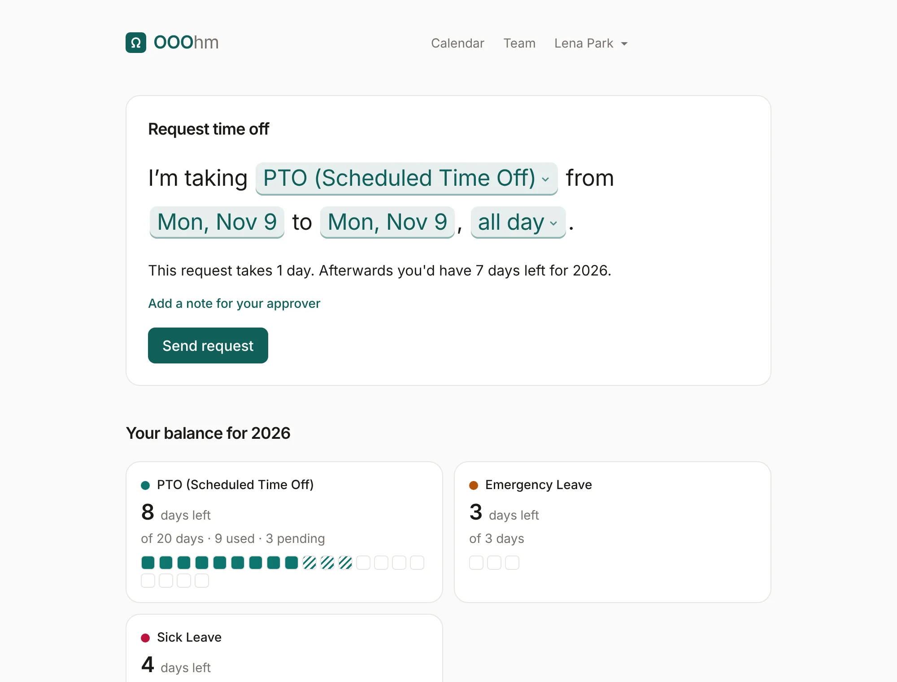
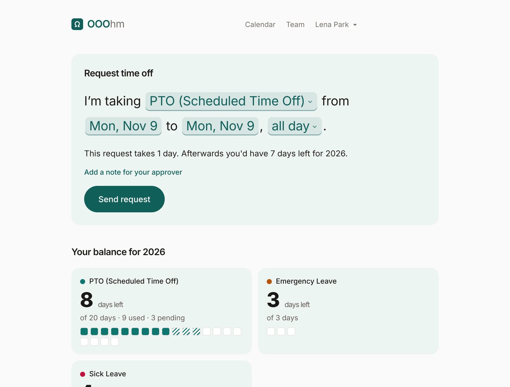
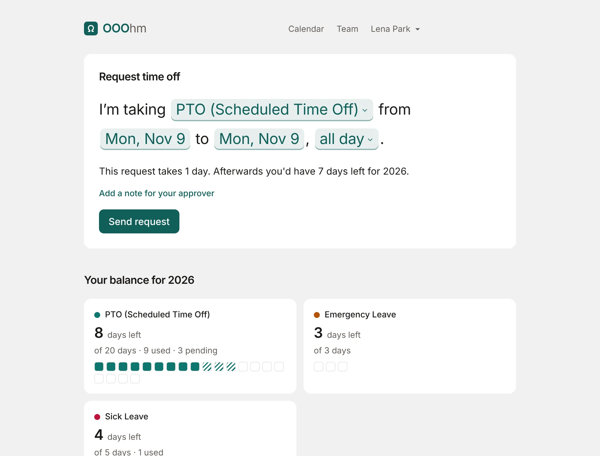
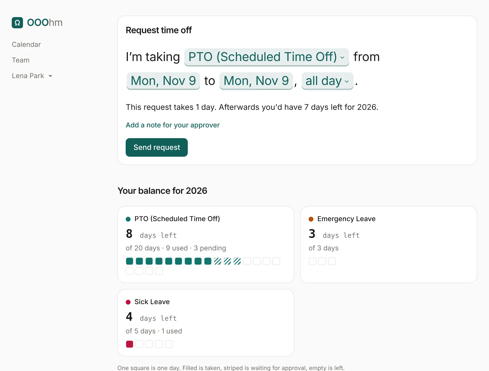
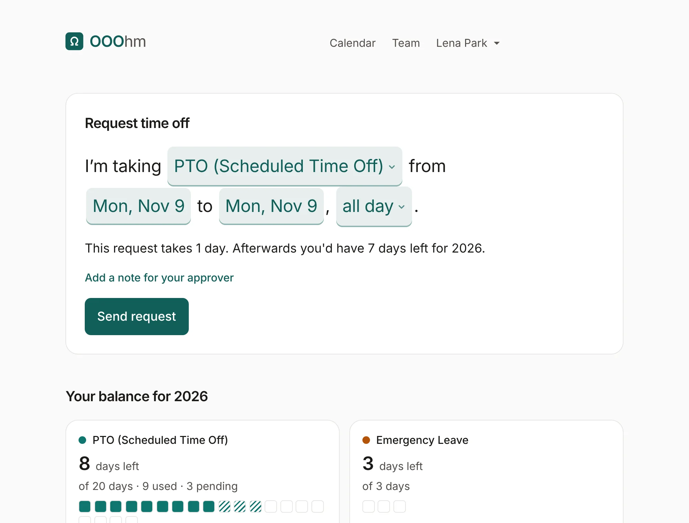